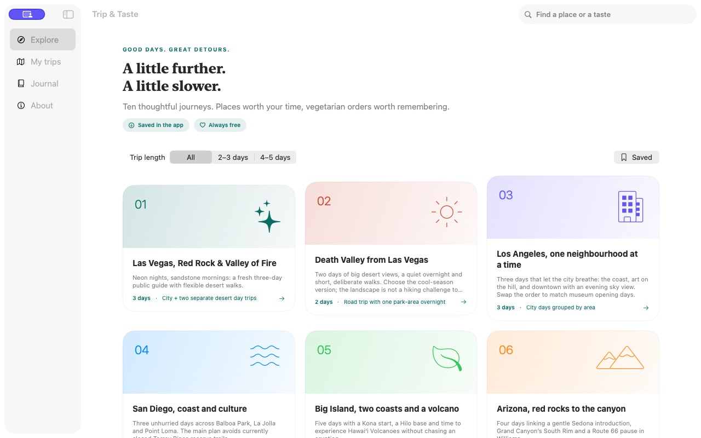

GOOD DAYS. GREAT DETOURS.
A little further.
A little slower.
Ten thoughtful journeys. Places worth your time, vegetarian orders worth remembering, and room to change your plans.
FreeNo accountOffline guides
Version 2.1 is now available free for iPhone, iPad and Mac. Public US App Store listings verified on 8 October 2026.
Download for iPhone and iPad Download for Mac

Ten journeys, ready to read
Original public guides for Las Vegas, Death Valley, Los Angeles, San Diego, Big Island, Arizona, Alaska, Gujarat, Portland and Seattle.
Make the days your own
Choose dates, reorder days, select alternatives and leave out optional stops. Saved rules show relevant closures and details to recheck.
Good food along the way
Find named vegetarian dishes at a mix of restaurants, plus preparation questions and links to the menu sources.
Keep a little record
Save preparation checkmarks and write a local travel journal. Share a plan or note only when you choose.
Ready when the signal disappears
Guide text, saved plans, preparation checks and journal entries work offline. There are no ads, subscriptions or in-app purchases. The app is built for iPhone and iPad with iOS 18 or later, and Mac with macOS 15 or later.
Maps searches, official websites and linked Techie Traveler Foodie videos open separately and may need internet. Navigation maps, live road conditions and bookings are not included. Facts show checked dates, and unresolved details stay visible.
Updating from the family hub?
Version 2 is a standalone public travel guide. It replaces the old web launcher. It does not import your old web-app data or include anyone’s private bookings or itinerary. Preserve your separate access to any old web services before updating.
Questions or feedbackInto the Monsoon
Version 2.1 includes ten additional English and Gujarati getaways across Gujarat, Maharashtra and Madhya Pradesh, with offline images and posters, favourites, matching and comparison. The original ten day-by-day guides remain included. Ratings are editorial suggestions and destination images are illustrative artwork.
The original Monsoon explorer remains online. Browser favourites stay in that browser and do not transfer automatically to the native app.